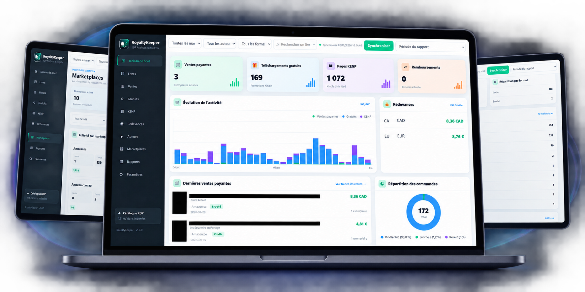

← RETOUR AUX PROJETS
PROJET / 04
ROYALTYKEEPER
Vos ventes KDP. Enfin lisibles.
RoyaltyKeeper centralise les données Amazon KDP dans une interface conçue pour suivre rapidement l’activité éditoriale. Ventes Kindle et papier, téléchargements gratuits, pages KENP, royalties, marketplaces et performances des titres sont réunis dans un tableau de bord unique, clair et exploitable.

L’ESSENTIEL
DES DONNÉES DISPERSÉES.
UNE VISION CLAIRE.
Ventes centralisées
Suivre les ventes Kindle et papier depuis une seule interface
et consulter rapidement l’activité récente.
Royalties
Visualiser les revenus générés et suivre les différentes devises
sans parcourir manuellement plusieurs rapports KDP.
Pages KENP
Intégrer les pages lues via Kindle Unlimited à la lecture globale
des performances du catalogue.
Multi-marketplaces
Identifier l’activité provenant des différentes marketplaces
Amazon et visualiser leur contribution.
Performance des titres
Repérer rapidement les livres qui génèrent des ventes,
des téléchargements ou des pages lues.
Suivi quotidien
Observer l’évolution de l’activité jour après jour grâce
à des indicateurs et graphiques réunis au même endroit.
LLOYD DIGITAL STUDIO